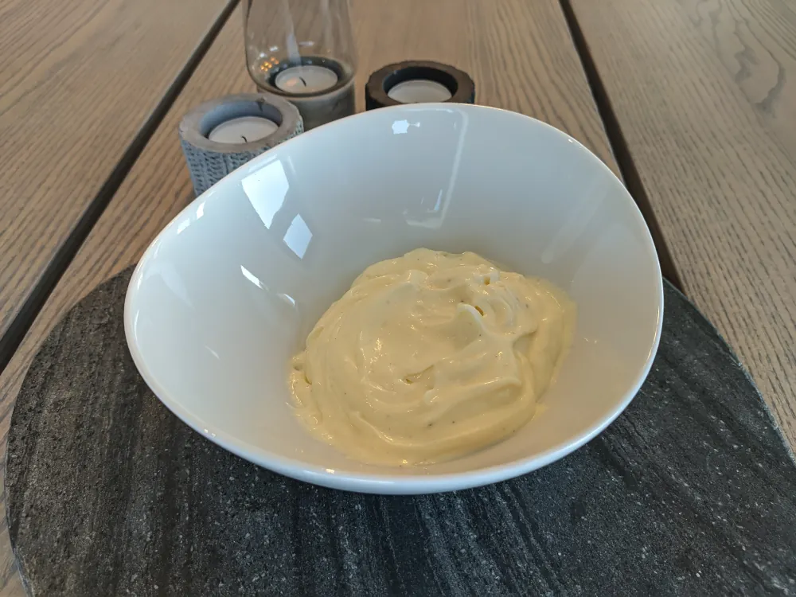

Mayonnaise or aioli

Aioli is pretty much just mayonnaise with garlic, although traditional aioli only includes olive oil and garlic, and no eggs or acid. This recipe uses raw eggs, so if that is sketchy in your region use pasteurized eggs 🥚.
- ⏲️ Prep time: 2 min
- 🍳 Cook time: 1 min
Ingredients
- 1 whole egg or 2 egg yolks, preferably at room temperature
- 2.5 dl/ 1 cup neutral oil
- 1-2 tbsp vinegar or lemon juice
- 1 tbsp pickle juice (optional)
- 2-4 cloves of garlic for aioli, don’t include for mayonnaise
- 1 tsp dijon mustard (optional)
Directions
- Place egg, vinegar, mustard a pinch of salt and pepper in a beaker or narrow and tall container. Add diced garlic for aioli.
- Add oil as the very last ingredient. It should be on the top of the other ingredients, or the mayonnaise/aioli could seperate.
- Place hand blender at the very bottom. Don’t start it yet.
- Use full power, and work your way upwards slowly until all the oil is mixed in.
- Feel free to taste and mix in extra spices and vinegar afterwards.
Contribution
- brox - xmr:
8AaUvC4JPfTVgy66FLd8mVfsPwT7RXJuPK2xySoKnFEhDZPNafpgn6rh8VPBVauyNP17EQQ1HGhMCZdtUJNoD7xnVt1cSLo